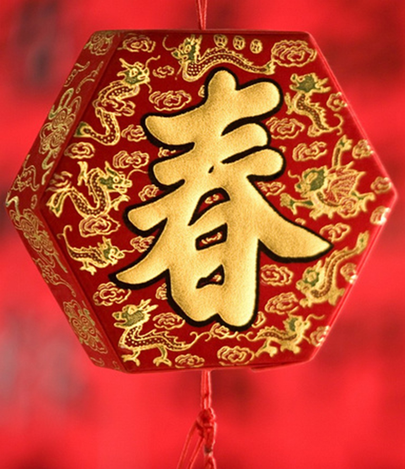

中国农历年的岁首称为春节
是中华民族最隆重的传统节日，也象征团圆、兴旺，对未来寄托新的希望的佳节。据记载，中华民族过春节已有4000多年的历史。关于春节的起源有很多说法。
相关来历中国历代元旦的日期并不一致：夏朝用孟春的元月为正月，商朝用腊月（十二月）为正月。秦始皇统一六国后以十月为正月，汉朝初期沿用秦历。公元前104年（元封六年），经司马迁等人提议，汉武帝下令改定历法。
公元前104年，天文学家落下闳、邓平等人制订了《太初历》，将原来以十月为岁首改为以孟春正月为岁首，后人在此基本上逐渐完善为我们当今使用的阴历（即农历），落下闳也被称为"春节老人"。此后中国一直沿用夏历（阴历，又称农历）纪年，直到清朝末年，长达2080年。春节不同时代有不同名称。在先秦时叫"上日"、"元日"、"改岁"、"献岁"等；到了两汉时期，又被叫为"三朝"、"岁旦"、"正旦"、"正日"；魏晋南北朝时称为"元辰"、"元日"、"元首"、"岁朝"等；到了唐宋元明，则称为"元旦"、"元"、"岁日"、"新正"、"新元"等；而清代，一直叫"元旦"或"元日"。
现代民间习惯上把过春节又叫做过年。其实，年和春节的起源是很不相同的。
那么"年"究竟是怎么样来的呢？民间主要有两种说法：一种说的是，古时候，有一种叫做"年"的凶猛怪兽，每到腊月三十，便窜村挨户，觅食人肉，残害生灵。有一个腊月三十晚上，"年"到了一个村庄，适逢两个牧童在比赛牛鞭子。"年"忽闻半空中响起了啪啪的鞭声，吓得望风而逃。它窜到另一个村庄，又迎头望到了一家门口晒着件大红衣裳，它不知其为何物，吓得赶紧掉头逃跑。后来它又来到了一个村庄，朝一户人家门里一瞧，只见里面灯火辉煌，刺得它头昏眼花，只好又夹着尾巴溜了。人们由此摸准了"年"有怕响，怕红，怕光的弱点，便想到许多抵御它的方法，如放鞭炮，于是逐渐演化成今天过年的风俗。
另一种说法是，我国古代的字书把"年"字放禾部，以示风调雨顺，五谷丰登。由于谷禾一般都是一年一熟。所"年"便被引申为岁名了。
节日特点
岁时节日，亦被称为"传统节日"。它们历史悠久、流传面广，具有极大的普及性、群众性、甚至全民性的特点。
年节是除旧布新的日子。年节虽定在农历正月初一，但年节的活动却并不止于正月初一这一天。从腊月二十三（或二十四日）小年节起，人们便开始"忙年"：扫房屋、洗头沐浴、准备年节器具等等。所有这些活动，有一个共同的主题，即"辞旧迎新"。人们以盛大的仪式和热情，迎接新年，迎接春天。
年节也是祭祝祈年的日子。古人谓谷子一熟为一"年"，五谷丰收为"大有年"。西周初年，即已出现了一年一度的庆祝丰收的活动。后来，祭天祈年成了年俗的主要内容之一。而且，诸如灶神、门神、财神、喜神、井神等诸路神明，在年节期间，都备享人间香火。人们借此酬谢诸神过去的关照，并祈愿在新的一年中能得到更多的福佑。年节还是合家团圆、敦亲祀祖的日子。除夕，全家欢聚一堂，吃罢"团年饭"，长辈给孩子们分发"压岁钱"，一家人团坐"守岁"。
相关谚语
天增岁月人增寿，春满人间福满门
爆竹一声除旧，桃符万象更新
一夜连双岁，三更分两年
冬天麦盖三层被，来年枕着馒头睡
喜居宝地千年旺，福照家门万事兴